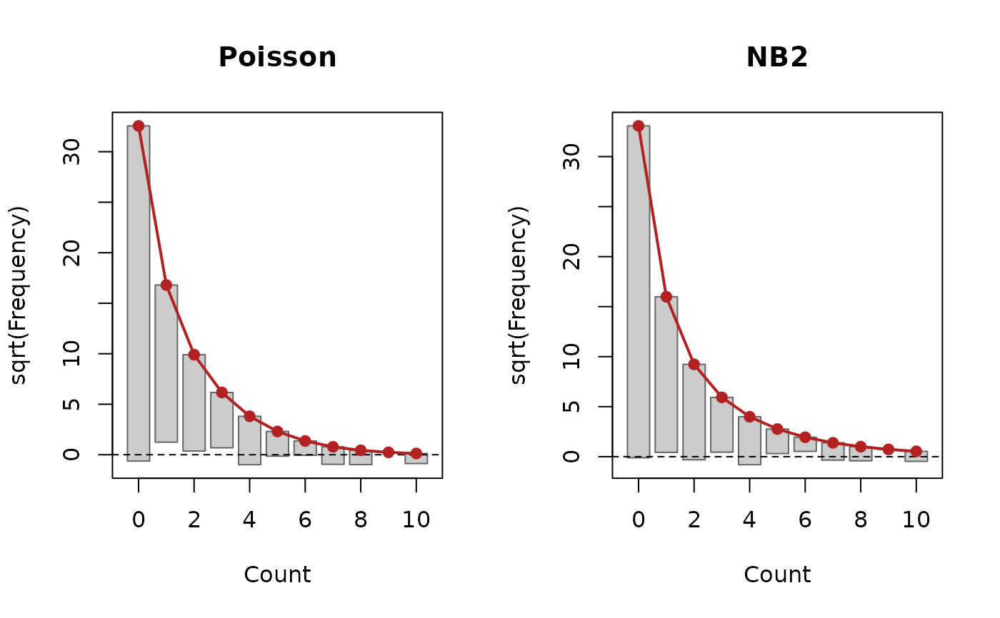

Compares observed and expected count frequencies on a square-root scale (Kleiber and Zeileis, 2016). Each bar shows the square root of the observed frequency of a count, hanging from the curve of the square root of its expected frequency under the fitted model, so bars that end above or below zero show counts that the model over- or under-predicts. Rootograms are a standard way to compare the count distributions this package offers.
Usage
rootogram(
object,
newdata = NULL,
max_count = NULL,
style = c("hanging", "standing"),
overflow = FALSE,
plot = TRUE,
main = NULL,
xlab = "Count",
ylab = "sqrt(Frequency)",
...
)Arguments
- object
a
countreg()model.- newdata
optional data (with the outcome) to evaluate the model on; defaults to the rows used in estimation. Without
newdata, the observed and expected frequencies count each row with its frequency weight.- max_count
the largest count shown. Defaults to the largest observed count. The cutoff only limits the display: the expected frequency of each shown count sums the fitted probabilities of every row, including rows whose outcome is above
max_count.- style
"hanging"(bars hang from the expected curve) or"standing"(bars stand on zero).- overflow
logical; add a last bin for
Y > max_count, so the observed and expected frequencies both sum to the total. Without it, the tail is reported in the"tail"attribute and, when it is not negligible, under the plot.- plot
logical; draw the plot?
- main, xlab, ylab
plot labels.
- ...
further arguments passed to
plot.
Value
Invisibly, a data frame with columns count,
observed and expected (frequencies), of class
flexCountReg_rootogram; with overflow = TRUE its last row
(count max_count + 1) is the bin Y > max_count.
Attribute "tail" holds the observed and expected frequencies of
Y > max_count. Rows with non-finite fitted means or probabilities are
left out of both frequencies, with a warning.
References
Kleiber, C., & Zeileis, A. (2016). Visualizing count data regressions using rootograms. The American Statistician, 70(3), 296-303.
Examples
# \donttest{
data("washington_roads")
pois <- countreg(Total_crashes ~ lnaadt + lnlength,
data = washington_roads, family = "Poisson",
method = "BFGS")
nb2 <- countreg(Total_crashes ~ lnaadt + lnlength,
data = washington_roads, family = "NB2", method = "BFGS")
oldpar <- par(mfrow = c(1, 2))
rootogram(pois, main = "Poisson")
rootogram(nb2, main = "NB2")

par(oldpar)
# }